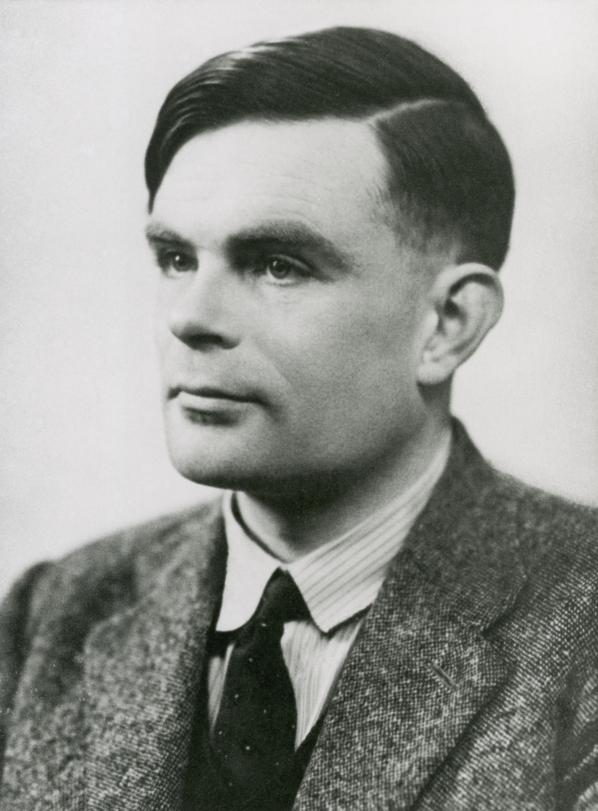

What does it mean to compute?
Turing described an abstract computing machine. His work helped establish both the power and the limits of algorithms, laying foundations for computer science.
MATHEMATICS · HISTORY · CODE
A machine that concealed words. The people who found a way to read them.
Explore the history, then follow the logic yourself.
01 / THE MACHINE
Loading local Python…
Press a key to advance the rotors and light its encrypted letter.
Each run starts from the settings above. Keyboard presses recompute the complete message from those settings.
The rotor order chooses three different wired wheels. Window letters choose their initial orientation; ring settings shift the wiring relative to those letters. The plugboard swaps pairs of letters before and after the rotor circuit.
To decrypt, keep the same starting settings, choose “Use output as input”, then “Process message”. Default settings turn HELLOWORLD into ILBDAAMTAZ and back again.
This teaching convention removes spaces and most punctuation, changes full stops to X, and converts Ä/Ö/Ü/ß to AE/OE/UE/SS. Numbers are omitted: spell them out first. Historical conventions varied. Decryption cannot automatically restore the original formatting.
A rotor contains 26 wires, one for each letter of the alphabet. Each wire connects a letter position on one side to a different position on the other. As the wheel rotates, it changes which wire lines up with the incoming letters.
Before each letter is encrypted, the rightmost rotor advances one position. Starting at AAA, your default simulator moves like this after pressing "A" five times:
| Key pressed | Rotor windows after moving | Encrypted letter |
|---|---|---|
| A | AAB | B |
| A | AAC | D |
| A | AAD | Z |
| A | AAE | G |
| A | AAF | O |
Notches make neighbouring rotors move. When a rotor reaches its notch position, the next keypress also advances the wheel to its left. The default notch settings for each rotor are as follows:
| Rotor Identifier | Rotor Wiring | Notch Position |
|---|---|---|
| I | 'EKMFLGDQVZNTOWYHXUSPAIBRCJ' | Q |
| II | 'AJDKSIRUXBLHWTMCQGZNPYFVOE' | E |
| III | 'BDFHJLCPRTXVZNYEIWGAKMUSQO' | V |
| IV | 'ESOVPZJAYQUIRHXLNFTGKDCMWB' | J |
| V | 'VZBRGITYUPSDNHLXAWMJQOFECK' | Z |
The wiring string lines up with the normal alphabet:
Input: ABCDEFGHIJKLMNOPQRSTUVWXYZ
Output: EKMFLGDQVZNTOWYHXUSPAIBRCJ
So A connects to E, B to K, C to M, and so on at the reference alignment. The rightmost rotor rotates once per letter, however, the middle rotor and leftmost rotor only rotate when a notch is reached. For example, with the default notch settings:
| Rotor Window | Notch Reached | Rotor Adances |
|---|---|---|
| ADV | Rotor III 'V' | Rightmost and Middle rotor advance once. |
| AEW | Rotor II 'E' | All three rotors advance once. |
| BFX | Double Stepping | The middle rotor has moved on two consecutive keypresses. |
The ring letters change the alignment of a rotors internal wiring relative to the alphabet shown in its window. Therefore, you can think of a rotor as two connected parts; an outer alphabet ring labelled A to Z, and an inner core containing the wires that scrambles the letters.
For example:
| Window Letter | Ring Setting | Wiring Alignment |
|---|---|---|
| A | A | Default alignment. |
| A | B | Wiring shifted backwards by one position. |
| A | C | Wiring shifted backwards by two positions. |
This means that two different Enigma machines can both display 'AAA' for their window letters, but encrypts a message differently if their ring settings differ. For example, if we set the Window letters to "AAA" and the Ring letters to "AAB" and press "A" six times we obtain:
| Key | Rotor | Encrypted Letter |
|---|---|---|
| A | AAB | U |
| A | AAC | B |
| A | AAD | D |
| A | AAE | Z |
| A | AAF | G |
| A | AAG | O |
The plugboard swaps letters in pairs, adding another layer of scrambling before and after the rotors. For example, entering "AB", "CD" and "EF" creates these connections:
| Letter | Swapped To |
|---|---|
| A | B |
| C | D |
| E | F |
Letters without a connection stay unchanged at the plugboard, but they still get scrambled by the rotors. When you press A, with AB CD configured, the plugboard changes A → B. B enters the rotors, travels through the reflector, and returns through the rotors. The returning letter passes through the plugboard again. If it returns as C, the plugboard changes C → D, and D lights up. That final example is conditional—the returning letter depends on your rotor settings.
02 / BEHIND THE BREAKTHROUGH
1912–1954
Turing’s work connected abstract mathematics with the possibility of machines that could carry out general computations.

Turing described an abstract computing machine. His work helped establish both the power and the limits of algorithms, laying foundations for computer science.
At Bletchley Park, Turing played a major part in attacking German naval Enigma. He developed the logic behind the British Bombe; Gordon Welchman’s diagonal board made it much more effective.
He did not invent Enigma or break it alone. Polish mathematicians Marian Rejewski, Jerzy Różycki and Henryk Zygalski made crucial earlier breakthroughs. Intercept operators, engineers, linguists and many other codebreakers made the wartime effort possible.
His paper “Computing Machinery and Intelligence” proposed the imitation game, now associated with the Turing test, as a way to investigate machine intelligence.
In 1952, Turing was prosecuted for a homosexual relationship and subjected to hormone treatment. He died in 1954, aged 41. His scientific achievements and the injustice he suffered are both part of his story.
THE IMPORTANT DISTINCTION
Enigma sent an electrical signal through a plugboard, three rotors, a reflector, and back again. The right rotor advanced before each letter. The middle rotor could advance on two successive keypresses: the “double step”.
The Bombe tested possible Enigma settings against a suspected fragment of plaintext, called a crib. It eliminated contradictions and left candidates for further checking. It did not simply translate any intercepted message at the push of a button.
This simulator models three rotors selected from I–V and reflector B.
03 / THE PYTHON LAB
The same Python engine powers the machine above. Edit this experiment and run it locally in your browser. Each run begins with a fresh Python namespace.
Python is starting…
Use print() to show results. Enigma and prepare are already available. Restart Python to stop a long-running experiment.
Enigma(...) creates a machine with your chosen settings. prepare(...) converts the text to the supported alphabet. machine.process(...) advances the rotors and encrypts each letter. print(...) displays a value.
To decrypt, create a new machine with the same starting settings. Reusing the already-advanced machine will give a different result.